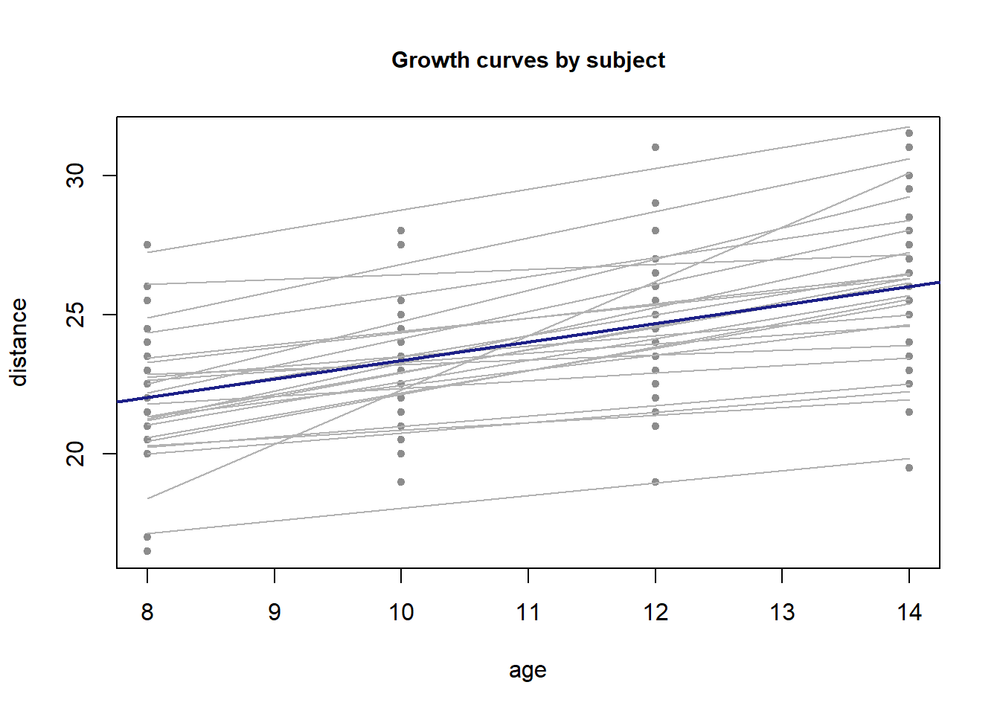

第 4 线性混合效应模型
线性混合效应模型（linear mixed model）用于处理分组、纵向与重复 测量数据，其思想是在固定效应之外引入随机效应以刻画组间异质性 (Laird and Ware 1982)。
4.1 模型形式
\[\begin{equation} \boldsymbol{y} = \boldsymbol{X}\boldsymbol{\beta} + \boldsymbol{Z}\boldsymbol{b} + \boldsymbol{\varepsilon}, \qquad \boldsymbol{b} \sim N(\boldsymbol{0}, \boldsymbol{G}), \quad \boldsymbol{\varepsilon} \sim N(\boldsymbol{0}, \boldsymbol{R}), \tag{4.1} \end{equation}\]
其中 \(\boldsymbol{\beta}\) 为固定效应，\(\boldsymbol{b}\) 为随机效应， \(\boldsymbol{X}\)、\(\boldsymbol{Z}\) 为对应的设计矩阵。
4.3 数值演示
nlme 是 R 自带推荐的混合模型包，无需额外安装。下面用其内置的
Orthodont 数据演示随机截距模型：
if (requireNamespace("nlme", quietly = TRUE)) {
fit <- nlme::lme(distance ~ age, data = nlme::Orthodont,
random = ~ 1 | Subject)
summary(fit)$tTable
} else {
"nlme 不可用（R 推荐包，通常随 R 安装）"
}## Value Std.Error DF t-value p-value
## (Intercept) 16.7611111 0.80239522 80 20.88885 3.896399e-34
## age 0.6601852 0.06160592 80 10.71626 3.952235e-17
图 4.1: Orthodont <U+6570><U+636E><U+6309><U+4E2A><U+4F53><U+5206><U+7EC4><U+7684><U+751F><U+957F><U+66F2><U+7EBF>
4.4 小结
Daniels, Henry E. 1954. “Saddlepoint Approximations in Statistics.” The Annals of Mathematical Statistics 25 (4): 631–50.
Koenker, Roger, and Gilbert Bassett. 1978. “Regression Quantiles.” Econometrica 46 (1): 33–50.
Laird, Nan M, and James H Ware. 1982. “Random-Effects Models for Longitudinal Data.” Biometrics 38 (4): 963–74.
References
Laird, Nan M, and James H Ware. 1982. “Random-Effects Models for Longitudinal Data.” Biometrics 38 (4): 963–74.